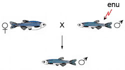
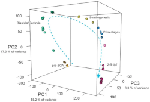
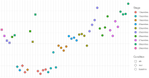

Resources
Here are links to some of the resources we've developed that others might find useful.
ZMP - Zebrafish Mutation Project
The Zebrafish Mutation Project at the Wellcome Sanger Institute generated a mutant archive of over 40,000 alleles covering 60% of zebrafish protein-coding genes. The alleles can be ordered from the Zebrafish International Resource Center (ZIRC) and/or European Zebrafish Resource Center (EZRC). More information is available in "A systematic genome-wide analysis of zebrafish protein-coding gene function".
Zebrafish developmental baseline
We have produced an mRNA expression time course of zebrafish development across 18 time points from 1 cell to 5 days post-fertilisation. To make this dataset generally useful, the data can be browsed and downloaded at Expression Atlas and Ensembl. More information is available in "A high-resolution mRNA expression time course of embryonic development in zebrafish".
Baseline CompaRe
Baseline CompaRe is an R Shiny app designed to help with the analysis of E8.5-10.5 mouse transcriptomic data, particularly in cases where the embryos of interest are developmentally delayed. We have produced RNA-seq data for wild-type embryos for stages from 4 to 36 somites to form a baseline for comparison to experimental samples. This allows us to prioritise genes that are more likely to be differentially expressed due to the condition of interest, rather than due to developmental delay.